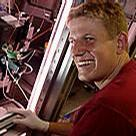

Frequently Asked Questions (FAQ)
General Questions
-
How expensive is YouScope?
YouScope is an open-source software which comes free of charge, thus you do not have to pay anything to use YouScope. However, depending on the microscope you use it might happen that you need to purchase third party software (e.g. drivers from the microscope producer). However, typically this is not the case. If it is the case, we as the developers have nothing to do with these additional software, and do not get any money or any other advantage from any purchase.
-
What is the license of YouScope?
YouScope is an open-source software. However, open-source is not equal to open-source. Most of the YouScope program is either licensed under the GNU General Public License (YouScope client, some plugins) or the GNU Lesser General Public License (YouScope server, some plugins). However, some parts of YouScope, such as images, plugins or shipped libraries, stay under a different licence. For more information, please read carefully all information shipped with YouScope (typically files having the string "licence" or similar in their name).
-
Warranty
YouScope is distributed in the hope that it will be useful, but WITHOUT ANY WARRANTY; without even the implied warranty of MERCHANTABILITY or FITNESS FOR A PARTICULAR PURPOSE. See the GNU General public License for more details. .
-
Why did you develop YouScope?
The simple answer is, we started to develop YouScope in the first place since we needed its functionality on our own, and there was no other software available which could provide it to us. The functionality of YouScope quickly increased when more and more members of our and related groups started to use YouScope for their projects and requested us to add certain features. Thus, most features YouScope provides today are directly related to academic projects and thus have proven at least once to be useful.
When more and more features were added, we realized in discussions with other groups, e.g. on conferences, that the functionality YouScope allocated over time could help to tackle their research questions and daily scientific live, too. Thus, we did spend considerably time to further develop YouScope, such that it can be employed in other laboratory environments without too specific previous knowledge, too.
-
Who developed YouScope?

Moritz Lang
Fabian Rudolf
YouScope was mainly developed by group members of the Computational Systems Biology (csb) Group of the ETH Zurich, Switzerland, with support of the Center for Information Sciences and Databases (CISD).
The two people contributed most for the development of YouScope are Moritz Lang, a trained engineer with experience in automatization and software engineering (among other things), and Fabian Rudolf, a trained biologists with a broad background in practical microscopy (among other things). However, several other group members of the csb group and the CISD contributed actively or by valuable discussions and testing to the success of YouScope.
-
Why do you want to replace Micro-Manager?
Background: Micro-Manager is a complex microscope control software developed by Arthur Edelstein et al. from the laboratory of Ron Vale at the University of California San Francisco, which can control various microscope types through a common user interface and –among others– allow to control the microscope by scripting. Theoretically it would have been possible to include (parts of) the functionality of YouScope in Micro-Manager.
The simple answer is: we do not want to replace Micro-Manager. In fact, YouScope depends on the functionality of Micro-Manager, especially on the wide variety of drivers provided by Micro-Manager to communicate with the various types of microscopes on the market. This is possible due to the good design of the Micro-Manager software, which allows –by purpose (see www.micro-manager.org)– to use the Micro-Manager microscope drivers (the "Micro-Manager server") without the Micro-Manager graphical user interface for other software projects.
To understand why we did not integrate the functionality of YouScope into the Micro-Manager user interface, one has to be aware that there are significant conceptual differences how an user is intended to use the two programs. We consider Micro-Manager to provide mainly a low-level access to the microscope, whereas YouScope is considered to be mainly used as a high-level interface to the microscope (although one might argue about this definition): Whereas in YouScope one rather defines an abstract imaging procedure (e.g. do a bright-field image and a red-fluorescence image every 20 minutes in every well of a microplate), in Micro-Manager one rather tells every device of a microscope directly what to do (e.g. move the stage to a specific x/y-position, set the focus, open the shutter, take a picture, save the picture, close the shutter, wait for a given time, go to the next position, ...). Although both, a higher-level abstractation in Micro-Manager as well as a lower-level one in YouScope, is possible, too, the focus of the program is definitly different. Thereby, depending on what exactly one intends to do with the microscope, either a higher or a lower-level abstractation can be favorable.
The "theoretical" higher-level abstractation of YouScope lead to an additional level of abstractation in the programming level (the "YouScope server"), to e.g. include precise timings of events and to protect the microscope from concurrent access (mulit-threading). Furthermore, it was necessary to redesign the user interface (the "YouScope client"), not only to provide easy access to the additional functionality, but also to "lead" the experimentalists who finally use YouScope to unperceived, but automatically, use the additional functionality in the right way without significant training, thus increasing the quality of the outcomes. Together with some other features of YouScope which would have been only hardly been possible to include in Micro-Manager (e.g. access to the microscope via a network connection, access to Matlab in a master-slave relationship, wide varyity of extendability using the Java plugin architecture, ...), these were the reasons why we decided to rather start a new software project which utilizes the drivers provided by Micro-Manager, rather than extending Micro-Manager itself.
Bugs and Erros
-
General
We try to reduce the number of bugs and errors as much as possible. However, there exist no complex software products for which it can be guaranteed that they are error-free. Furthermore, YouScope can integrate or communicate with a wide variety of third party software, drivers and plugins. We, as the developers of YouScope, might –due to the modular design of YouScope– not even know all software with which YouScope interacts on your specific system for your specific installation.
However, although it is (practically) impossible to make YouScope bug-free, one should try to reduce the amount of bugs as far as possible. If you found a bug, we herewith want to excuse us, but also ask you to help us to remove the bug. Therefore, we want to first ask you to read the list of known bugs in the documentation. Maybe the bug is already known and there might even exist a workaround for it. If this is not the case, please contact us (how to do so, see below), such that we get aware of the bug. -
Known Bugs
There are several bugs which are already known. For some of them a workaround exist, some of them we simply did not yet have enough time to remove them, and for others we simply have no idea how they can be tackled at all. To see the list of known bugs, please visit the respective section of the documentation.
-
Report a bug
If you want to report a bug (please visit the documentation to check if the bug is already known before), please visit the page contact for more details.
Configuration
-
General
YouScope does not communicate with a microscope directly, nor does it provide directly any drivers to do so. Instead, YouScope uses parts of the software Micro-Manager for this propose. To set up the configuration of the microscope (the *.cfg file which has to be provided when YouScope starts), we currently recommend to directly use the Micro-Manager GUI. For more information on how to do so, please visit the Micro-Manager project homepage (www.micro-manager.org).
After the microscope is configured using Micro-Manager, some additional information has to be provided to make YouScope run probably. To learn more how to do so, please visit the respective section of the documentation. If you have problems during the configuration of YouScope, please contact us.
Features / Services
-
General Remarks
We would like that many people are able to use YouScope, for many –even specific– research or even economic proposes, and are thus interested to steadily improve the functionality of YouScope. However, please understand that YouScope is free-of-charge and (at least currently), we do not earn any money by providing this program to the public. Thus, although you are welcome to send us any feature request or ask us for any service you would like to have, we ask for your understanding that we reserve the right to decline any request, e.g. if we simply don't have the required man power.
-
Request a Feature / Service
You are welcome to send us any feature request or ask us for any service you want connected to YouScope (see general remarks). How to contact us we describe in the contact section. However, before requesting a feature, you should ask yourself if you might even be able to include your feature on your own (see below).
To request a feature it would be nice to include the following information in the request:- Describe the feature in as general terms as possible (e.g. I have to be able to use multiple stages).
- Describe where you think the feature should be integrated (e.g. New Microplate Measurement - second window), or how you would like to interact with this feature (e.g. a new window where I can press a button and then the microscope does something).
- Include if you think this feature might be interesting for other users, too, and who might be these users. If so, this might significantly increase the chance that the requested feature is actually implemented
- If there is another program which already has a similar feature, name it.
- And, most important, give your own contact information.
-
Do It Yourself
YouScope is built in a modular way. This allows to simply include various kinds of java-plugins to the program which increase its functionality. Furthermore, YouScope has a scripting interface which allows to include additional functionality even if one only has limited programming experience or time. To learn how to write a plugin, please visit the respective section of the documentation.
-
Publish a Plugin
YouScope is provided free of charge. If you have written a plugin which might be helpfull for others, too, think about to give back something to the microscope community by publishing the plugin. Preferably you will publish the plugin for free, but the licence agreement also alows you to ask for payment for certain types of plugins (see the respective licences provided in your YouScope installation). In any case, contact us: We might link a webpage where you provide the plugin or, if the plugin is for free, even provide the download at the official YouScope page (including citation, tribute, your licence, ...). The amount of available methods for microscopy only increases if many people contribute in the development process!
-
Contribute to the Development Process
YouScope is not only free, most parts of it are also open source (for the licences of the respective modules, see your installation folders). This means that you can download and manipulate the source code of YouScope (for more details, see the licences). However, if you do so silently, all your changes will not be included in the next release of YouScope. Instead, it would be better to join the development group of YouScope and help us to prepare the next official release.
We here have to add that, currently, YouScope is still programmed by a small group of people. Thus, we yet did not spend time in organizing a professional distributed development process as one might be used from other bigger open source projects. However, if we would realize that interest of other developers exist to take part in the development of YouScope (by you contacting us), we will take care of this topic.
-
Pay for a Feature / Service
As mentioned above, it might not be possible for us to provide any service or plugin you may want us to provide, since we have to care to earn real money, too. However, if you have a task you want us to fulfill where we normally would not have enough time or man power for, things might change if you would agree in paying for the service/plugin.
This does not mean that we will ask for money whenever you contact us with a reasonable request. However, if the task you intend us to do means a lot of work, is only interesting for your special project, if you will earn money with the product we help you to develop, or if you do not want anybody else to e.g. also obtain a plugin you requested us to develop for you, then it might be a reasonable idea that you pay us for our work. If you are interested in such an agreement, please contact us.
Sience
-
You Cite Us
As everybody in academia knows, citations are the unofficial payment for everybody doing science. Since we, the people who developed YouScope, predominantly work in the academia, we would consider ourselves lucky if you might think about citing YouScope in your next paper/book/... if you used YouScope to generate the data therein. In the nearer future we plan to publish several articles in scientific journals describing YouScope and how to use it. Until these papers are published, please shortly contact us to get to know how you can cite us.
-
We Cite You
If you are using YouScope in your lab or even published a paper for which you used YouScope to generate data for, please tell us. We will collect all labs in which YouScope is used and all papers for which YouScope was used and publish them on this homepage (youscope.org).
-
Collaborate
If you are planing a project/a publication in which (microscope) automatization plays a role, you might consider to start a collaboration with us. We have a wide experise in automatization and microscopy, which might help you in your project. However, in such a case we might to be included in the author's list, too. If you consider a collaboration, please contact us.